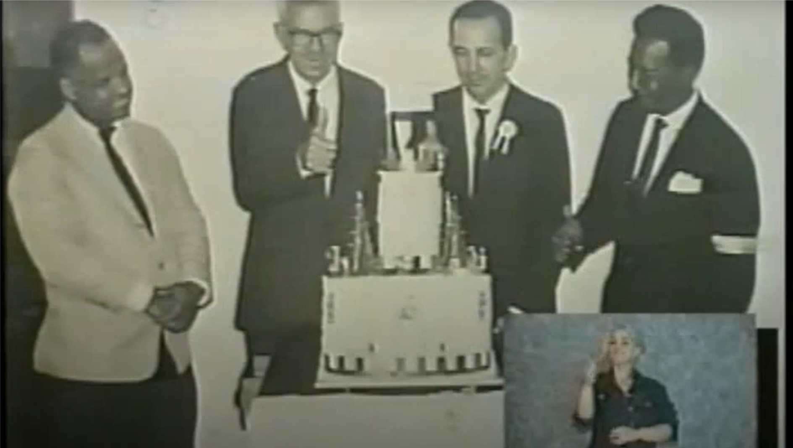

No início da década de 60 um pequeno grupo formado por surdos que viviam na cidade de Uberlândia se reunião frequentemente pra trocar ideias, lamentar suas tristezas e comemorar as alegrias, sentimentos difíceis de ser compartilhados e compreendido por outro grupo da sociedade. O tempo foi passando e esse grupo percebeu que os anseio as aspirações e as necessidades eram comuns entre eles e que juntos estavam fortalecidos pra lutar contra todas dificuldades encontradas né uma sociedade discriminadora e preconceituosa da época. Foi esse espírito de luta que o grupo liderado por Francisco José Dias resolveu criar a Associação de Surdos de Uberlândia.
No dia 31 de agosto de 1966 oficializou se a sua fundação que passou a ser a sede na residência do Sr. Francisco José Dias, o qual foi escolhido para ser presidente no período de 2 anos, assim as reuniões foram programadas, passando a ter um caráter social, onde os surdos se reuniam para planejar e, posteriormente realizar passeios, festas, jogos e ao mesmo tempo receber informações e conhecimentos trazidos pelo Sr. Francisco José Dias do Instituto nacional de Surdos do Rio de Janeiro no decorrer do tempos vários conflitos foram surgindo, a diretoria mudou, o Sr. José Osmar Costa membro do grupo assumiu a presidência tudo era muito difícil o grupo começava a se desfazer o Sr. Wellington Machado de Souza outro integrante do grupo assumiu a presidência da associação mais como morava em Araguari tinha pouco tempo para dedicar aos trabalhos da associação foi ai que encerrou as atividades na ASUL no ano de 1972 e com ela sua primeira etapa. José Osmar costa consternado com o fechamento da associação guardo todos os documentos pois tinha esperança de um de reabri-la, o tempo passou e na década de 80 um novo grupo de surdos jovens começou a se reunir na praça Tubal Vilela em Uberlândia este liderado pelo Sr. Ricardo de Jesus Vital que logo Conseguiu uma sala de aula na Escola Estadual 13 de maio conseguiu onde acontecia as reuniões semanais
No ano de 1985 o Sr. Ricardo de Jesus Vital com o apoio de José Osmar Costa reabriram a associação dos surdos de Uberlândia onde foram eleitos presidentes e vice-presidentes com isso os estatutos foi refeito iniciando uma nova fase na comunidade de Uberlândia, o grupo tinha anseios e muita vontade de crescer dentro do contexto social os encontros semanais foram acontecendo mais com uma liderança conturbada e com muitas dificuldades as reuniões passaram a ter momento onde as reclamações e conflitos tornaram-se frequentes. APASUL- Associação dos pais dos surdos de Uberlândia apoiavam trazendo representantes de outras associações e federações e orienta los e ao mesmo tempo conseguia ganhar um terreno da Prefeitura Municipal de Uberlândia parar construir posteriormente a cede da ASUL, forma uma equipe de futebol era o desejo maior que unia todos associado na esperança que pode se competir e representar ASUL em todo Brasil pois sabiam que o esporte era de fundamental importância para eles a ASUL sobrevivia com pequenas contribuições de seus associados as federações que eram afiliadas não prestavam nenhum benefício e exigiam taxas altas de contribuições o tempo foi passando e outras diretorias foram contempladas com as eleições foram presidentes no período de 1985 a 1996 – Ricardo de Jesus Vital, Alberto Antônio Pereira Braga, Paulo de Jesus Oliveira, Adão Mendes Pereira, Carlos Humberto de Oliveira todos eles se empenharam para cumprir com a função e o cargo que ocupavam mais com um complicador não tinham uma cede própria e nem recursos financeiros para alugar um prédio, por isso repassaram em vários locais como a Escola Estadual 13 de maio, Escola Estadual Coronel Teófilo Carneiro e Escola Estadual Leôncio Chaves as quais emprestavam uma sala para realizações das reuniões e para guarda os escassos mobiliários que componha se de uma mesa um cadeira um arquivo um armário e uma máquina de datilografia e os troféus recebidos em competições esportivas por isso considerados relíquias dos associados.